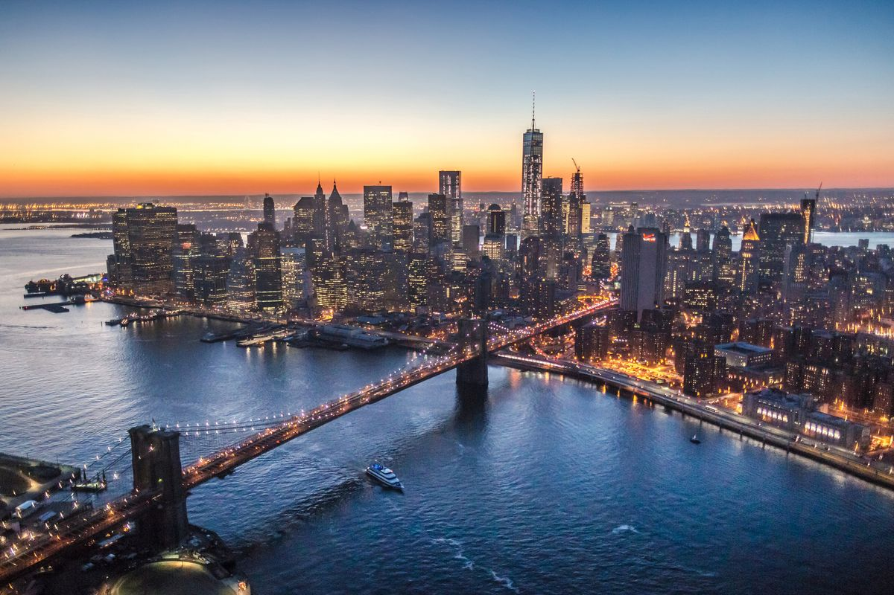
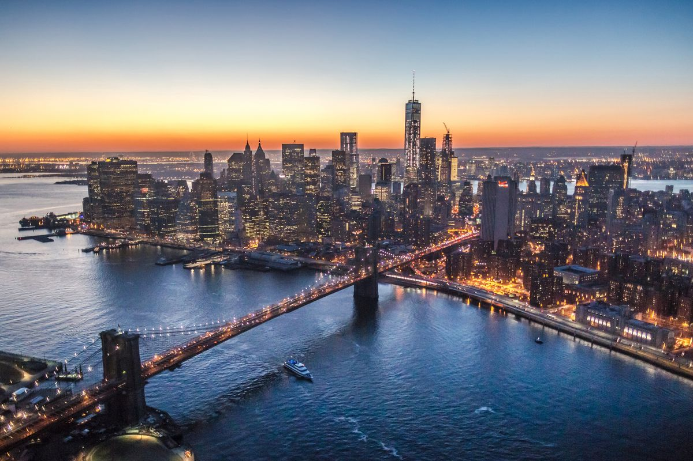
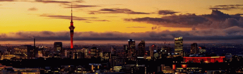
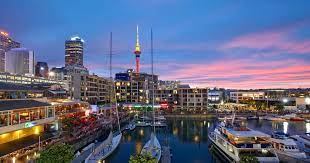
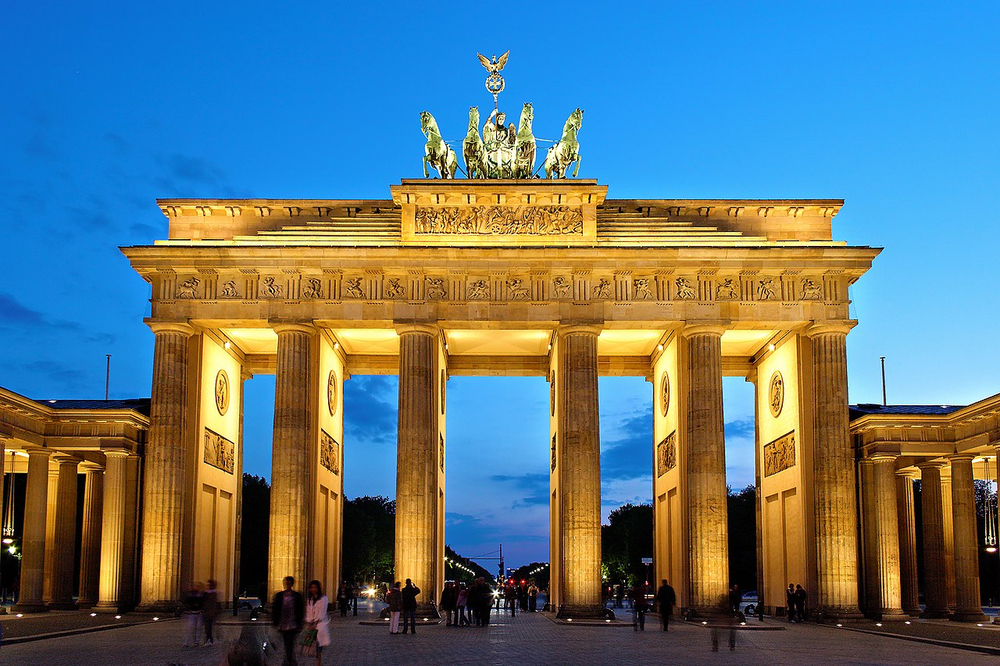
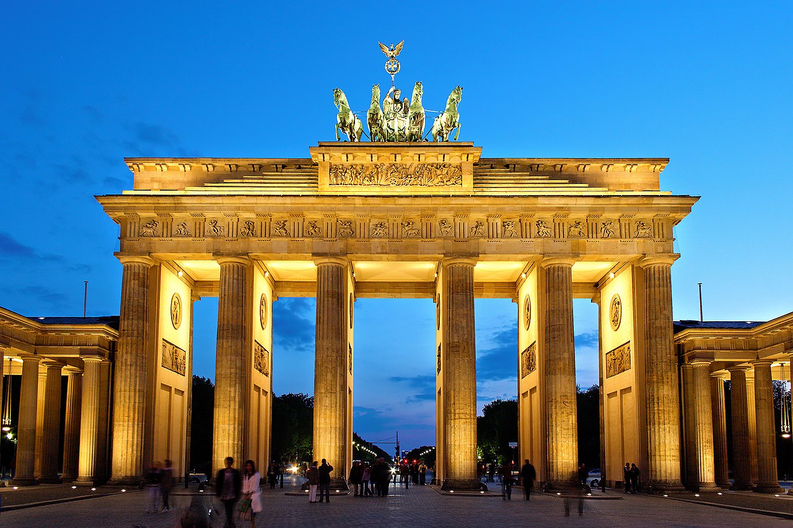
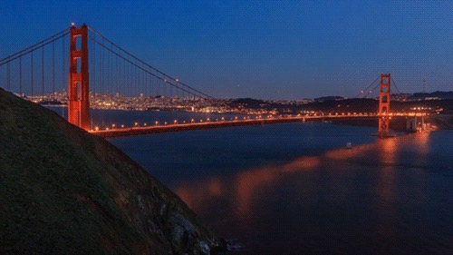
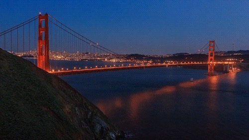

Rome


Geographical Location: Europe
The national capital of Italy remains a historical and political hub today. Nicknamed the “Eternal City,” Rome is considered the origination of the Catholic Church and Roman civilization central to the development of the Western World. Divided into 22 walled rioni (districts) surrounded by 35 quartieri urbani (urban sectors) that are surrounded by 6 large suburbi (suburbs), the city, just larger than New York City at an area of 496 mi2, is home to 2.8 million residents. Its economy runs on the tourism and services industries, the latter mostly in government jobs.
The Via del Corso, named after Roman carnival horse races, is the main street that runs through Rome. Many significant churches, palaces, and squares run along this road (Piazza del Popolo, and the Spanish Steps in Piazza di Spagna, for example). The seven hills that surround Rome are trenched with mythological history which can be seen through the prevalence of temples. Must-see landmarks for those traveling include the Colosseum, Roman Forum, Pantheon, and Catacombs. St. Peter’s Square & Basilica and the Sistine Chapel, technically located within Vatican City – an independent city-state within Rome – are also worth a visit.
Photo Gallery

New York City
 

Geographical Location: North America
New York City, otherwise known as “The Big Apple,” is a bustling city in the United States of America. Home to about eight million people, New York City houses popular attractions such as the Statue of Liberty, Central Park, the Empire State Building, and many more.
There are five boroughs within New York City, including Brooklyn, Manhattan, Staten Island, Queens, Bronx. Each borough is filled with different sights to see. New York City has many opportunities not only for those who live there but also those visiting. From navigating the subway system to seeing a Broadway show, it is impossible to get bored.
Photo Gallery

Auckland, New Zealand
 Geographical Location: Oceania
Auckland is the largest city in New Zealand located on the Northern Island of the country. The city’s population is just below 1.7 million people. Auckland is known as the “City of Sails” for its plethora of sailboats and yachts. The vast amount of waterfronts and harbors are conveniently located for sailors to embark on their hobbies.
Aside from sailing and waterfronts, Auckland is also surrounded by 48 volcanoes and a few rainforests. The climate of Auckland is mild-temperate. The winters are not too cold (averaging 64 degrees Fahrenheit) and summers mildly harsh (around 80 degrees Fahrenheit).
Photo Gallery
Berlin
 

Geographical Location: Europe
Berlin, a city of fascinating contrasts, seamlessly blends a storied past with a cutting-edge present. The Brandenburg Gate, an iconic symbol, stands as a reminder of history, while sleek modern architecture shapes the skyline. The city's artistic spirit thrives, evident in vibrant street art, avant-garde galleries, and the East Side Gallery's striking murals on the Berlin Wall's remnants.
Berlin's neighborhoods each offer a distinct flavor. Kreuzberg brims with bohemian energy, Prenzlauer Berg exudes hipster charm, and Charlottenburg boasts elegance. As the sun sets, Berlin's renowned nightlife awakens. Legendary techno beats pulse through clubs like Berghain, offering an unforgettable nocturnal adventure. From exploring solemn historical sites to savoring culinary delights in bustling markets or finding tranquility in its ample green spaces, Berlin invites you to explore its multifaceted identity, where history dances with innovation at every corner.
Photo Gallery
San Francisco, California
 

Geographical Location: North America
San Francisco is a great location to visit with many landmarks, including the Golden Gate Bridge and Alcatraz. Located in Northern California, San Francisco is one of the most populated cities in California with a population of 815,000. The city is also a center of culture and industry. San Francisco is home to a thriving tech industry.
San Francisco has many trails and parks where you can hike or enjoy a walk. The Presidio is a large park with hiking trails and paths surrounding the Golden Gate Bridge area. One can see picturesque views of the bay and its wildlife.